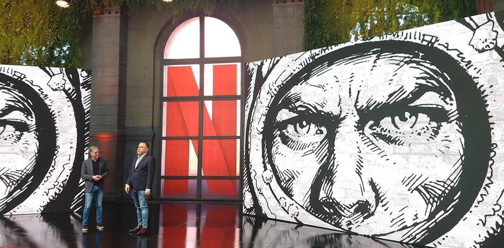

Ricardo Darín confirmó que protagonizará "El Eternauta" en Netflix: "Es un proyecto que no pasará desapercibido"
El actor adelantó algunos aspectos de la adaptación que prepara la plataforma sobre el mítico comic de Héctor Germán Oesterheld.
Cómo es El Eternauta: la historieta que Ricardo Darín hará como serie para Netflix
Luego del éxito de "Argentina, 1985", Ricardo Darín ya está trabajando en el próximo proyecto: protagonizará "El Eternauta", la adaptación que prepara Netflix del popular comic de Héctor Germán Oesterheld, sobre un futuro distópico en una Buenos Aires cubierta de nieve radioactiva.
"Es un proyecto enorme y muy complejo, es una versión aggiornada que pretende tener un alcance más allá de las fronteras de nuestro país. Está basada en el cómic real, pero hay una nueva versión y estamos todos muy entusiasmados y movilizados", confirmó en una entrevista con CNN Radio.
"Es un trabajo muy arduo, me estoy preparando porque es de una gran exigencia mental y física. Será algo que no pasará desapercibido", sostuvo, y adelantó que están pensando en una o dos temporadas.
Darín además destacó el trabajo del director Bruno Stagnaro (Okupas, Un gallo para Esculapio), que desde hace tres años trabaja en el proyecto. "(Él) es la cabeza de una serie de guionistas detrás de esta nueva versión. Han hecho un trabajo increible y nos espera algo increíble", sostuvo.
"El cine es un traslado de nuestra cultura y nos da a conocer en el mundo de una forma muy buena, en momento donde las noticias a lo mejor que llegan de la Argentina no son del todo agradables. Debemos defender nuestro cine, nuestra cultura y nuestras artes", remarcó Darín.
Un proyecto largamente esperado
Si bien a principios de 2020 Netflix había anunciado que iba a sumar a su catálogo una serie basada en la historieta estrenada en 1957, poco tiempo después la pandemia detuvo sus planes.
Una de las empresas involucradas en la cuestión es K&S, la productora que formaron Hugo Sigman y Oscar Kramer, para la que Darín protagonizó ya varios títulos exitosos, de Relatos salvajes, de Damián Szifron, a La cordillera (de Santiago Mitre) y La odisea de los giles, de Sebastián Borensztein, que Kenya también produjo.
Cuando se anunció el proyecto, trascendió que la producción iba a tener que cumplir con ciertos requerimientos de los herederos de Oesterheld y del dibujante Francisco Solano López como, por ejemplo, que la serie fuera filmada en Buenos Aires -donde transcurre la historia- y que estuviera hablada en castellano.
Escritor, guionista y militante de Montoneros,
El Eternauta se centra en una invasión de seres sobrenaturales, que se apoderan del mundo en un futuro distópico -la acción arranca en 1959, y llega a 1963-. Oesterheld la escribió, y Francisco Solano López la dibujó, y fue publicada en Hora Cero Semanal, de 1957 a 1959.
Y es el propio Oesterheld quien se interpreta a sí mismo, como un guionista de historietas, que escucha el relato de Juan Salvo (el personaje que, de aceptar, encarnaría Ricardo Darín), un hombre que se materializa, de pronto y de la nada, en su hogar.
Salvo cuenta que un día, estando en su casa en Vicente López junto a su familia (su esposa y su hija) y tres amigos con los que estaba jugando al truco, escuchan por la radio una extraña noticia. Hubo una explosión nuclear en el Océano Pacífico. La electricidad se corta. Miran hacia afuera, y la calle está completamente cubierta por una especie de nieve luminiscente. El silencio es total.
¿Qué más ven? Cadáveres y automóviles que chocaron, y a los vecinos de enfrente, que abren una ventana para ver qué sucedía, y los ven morir. Intuyen que es esa nevada la razón de su muerte.
A uno de los amigos de Salvo -Favalli, profesor de Física- se le ocurre la creación de un traje aislante, que proteja del contacto con la nieve.
Así nace El Eternauta, que contará las batallas con los "cascarudos" en plena Avenida General Paz (la primera confrontación), y también habrá confrontaciones internas en la cancha de River Plate, donde el Ejército centró su base de operaciones.